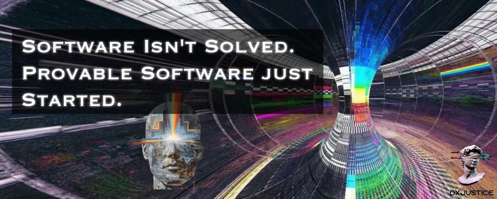

The Era of Provable Software is Just Beginning
Originally published at https://x.com/singularityhack/article/2110371374858485760

The world was shaken last week when OpenAI pointed an unreleased internal model at roughly 4,000 open math problems and claimed to have solved problems that had stood open for decades. Some came with proofs written in a formal language called Lean, which lets a computer check every step of a proof the way a compiler checks code. The catch is that a human still has to trace through and confirm that the formal statement matches the problem it claims to settle. If even some of these are real, it's a striking moment in history. The mathematical world was shocked.
"If a human did this, it would be an instant Fields Medal, no questions asked." - Alex Kontorovich at Rutgers.
Scott Aaronson called it "one of the biggest days in mathematical history," then noted that no human has yet understood almost any of the proofs. Andrew Sutherland at MIT cautioned that some of the proofs will probably turn out to be wrong, a few seriously so, and a group letter circulating among mathematicians said that dumping 700 files at once showed power rather than scholarship.
That same week, a wave of AI-assisted reverse engineering of complex commercial applications went viral, centered on the open-source REA ("Reverse Engineer Anything") project. Reverse engineering is at a tipping point, and between the proof dump and the agent demos, people have started to say that software is solved.
I'll argue that something more fundamental is underway. Between the math breakthrough and the software acceleration, we're seeing the beginning of provable software at scale. I think OpenAI's math results are less about math than about a new era of mathematical software.
The deep connection between code and math has been known for many decades. The Curry-Howard correspondence holds that math and code are the same thing at the root. The rest of this article argues that the code we knew is indeed solved, but that a new frontier and a new type of coding are just beginning.
What makes Vericode different?
When programmers write software now, they also write code that exercises it in specific ways. We call these tests. As the code grows, the tests grow with it, and shipping anything new means running the whole suite to be sure nothing that used to work has broken in the process. That takes time, and you still never fully know if the code is bug-free. One special circumstance may break everything, and you just didn't think to write a test for it.
Take SQLite as an example. It's one of the most tested pieces of software in the world, embedded in everything from phones to browsers. Its core is about 156,000 lines of C. The test suite behind it runs about 92 million lines, or 590x the size of the library. The tests under the product grow faster than the code we actually care about, and it still isn't certain. Every one of those 92 million lines checks a case someone thought of.
Formally verified code works more like a math problem. You don't write a pile of other math problems to find out whether 2 + 2 is 4. You know it, because that's the only way it can be. It's deductively sound rather than inferred from years of experience. Formally verified software is built the same way: the program comes with a proof that it behaves as specified, for every input, by definition, forever. It's beautiful in a way that feels like a different kind of science. The research community has only recently started calling this vericoding.
What could Vericode unlock?
By definition, formally verified code has no bugs and no unexpected outcomes. Until now, it was so expensive to produce that it was reserved for the highest-stakes systems: avionics, hypervisors, microkernels. If it were everywhere, you could plug components together without wondering whether they'll work. Your codebase wouldn't need to carry a test suite several times the size of the product and still leave you unsure. You could write code that is mathematically proven to be the most efficient form of what it is.
Whole classes of vulnerabilities would stop being bugs you hunt and become theorems you cite. When a piece of code gets formally verified, the result is a proof that no userspace input can ever cause a panic, which is a much stronger statement than "we looked and found none." Parsers, crypto, input validation: attackers live in the places a proof can close for good.
Today, using someone else's software package means trusting that person. A verified package could ship with its own proof. You wouldn't have to read every change to find out whether an upgrade broke something; if an upgrade changed behavior, the spec would fail before it ever reached you.
With a proof of equivalence, software rewrites also become certain. You could port a C library to Rust, or an Erlang system to whatever comes next, and prove the new one does exactly what the old one did. Compliance would change too: audits could become proofs, and a regulator or an insurer wouldn't read your test plan; they'd check your theorem.
Verified software is also durable in a way software has never been. A verified component doesn't rot. The era of disposable software may be upon us, but we're simultaneously entering an era of code that is expensive to discover and then true forever.
Creating software like this would feel like uncovering pure, crystallized, geometric forms. Paul Erdős liked to talk about "The Book," where God keeps the perfect proof of every theorem. Vericode is software from that Book.
Why is now different?
It's different now because compute alone can find and construct formally verified code. That used to take expensive, slow, expert labor. Now we can brute-force it, and the numbers from the past year seem to agree.
It works like this. Each problem is a specification, a precise description of what a program must do. An LLM model has to produce both the program and the proof that it meets the spec, and the proof checker grades the result. The largest benchmark holds roughly 12,500 such problems across three proof languages. Models that can see and retry their errors currently solve about 82% of the problems in Dafny, 44% in Verus (which proves Rust code), and 27% in Lean.
On the benchmark's pure-Dafny problems, success went from 68% to 96% in a single year, from LLM model improvements alone. And the retry loop is quickly becoming the crude approach. Emergence AI's Tiny Prover works inside Lean as it writes, checking each step as it goes, and it solved VERINA, a benchmark of Lean verification problems, in its entirety on the first attempt.
In September, Claude agents produced the first complete computer-checked formalization of Fermat's Last Theorem in about eleven days: roughly 13 million lines of Lean and some 29,500 intermediate theorems, with no placeholders, for a task that had occupied a human team for years. Formally verified code is a completely different mental model, one most software engineers have never been exposed to because it was never within reach.
People like DHH have said the old world of software is gone, that we should get over it, that everyone in software is a product person now. I'm not sure that translates. There are still distinct personas. The person who wants to start a business and do business development, marketing, and pricing isn't the engineer, and most engineers aren't interested in that. That leaves them a little homeless, frankly, in some existential angst, wondering where to go from here.
I think formally verified software is the next step. It requires a distinct skill set, and that skill set fits what engineers have done before. It's continuous with their history.
What's the current state of Vericode?
Formal verification can't start in mid-air. It has to be built up from the bottom, which is why most of the work so far sits at the deepest layers: compilers, kernels, hypervisors. But awareness and progress will move fast. The trend in people searching for Lean over the past year, compared with previous years, tells the story.
Higher-level ecosystems are further behind. Elixir, which I care about, has TLX, which lets you write TLA+ specifications in Elixir syntax and model-check a GenServer design exhaustively, but there is no mature path from Elixir source to a machine-checked proof yet. @josevalim's experimental Lynx project, which translates Core Erlang to Lean, is an early attempt.
There is a lot of exciting work to be done, and everything isn't solved. That's easy to believe if you follow what people claim on X. Viral posts are produced to get attention, because attention is the ultimate currency. Models are powerful, and someone with real knowledge still has to create them. They need to know how pre-training works, how post-training works, what the harness is, what the domain is, and how fine-tuning works. Someone has to build all of that.
Formal verification is in the same place, and the work has barely started. There is no Hugging Face for formally verified software; it lives on GitHub alongside everything else. That is an opportunity: to level up on the concepts, setup, compute, and work of creating verified components, and to understand the limitations and new needs that appear when you combine them. Two verified modules are not automatically verified in how they interact. The Vero benchmark, the first repository-level test of joint code-and-proof synthesis, found that failures were mostly about shared invariants and repository consistency, not individual proofs.
I suspect this is the new domain of software engineering, sitting next to model design and training: two sides of one discipline, the inductive and the deductive. Code isn't solved yet. It's really just beginning.
https://www.justiceconder.com/blog/0xjustice-ai-as-industrial-scale-induction